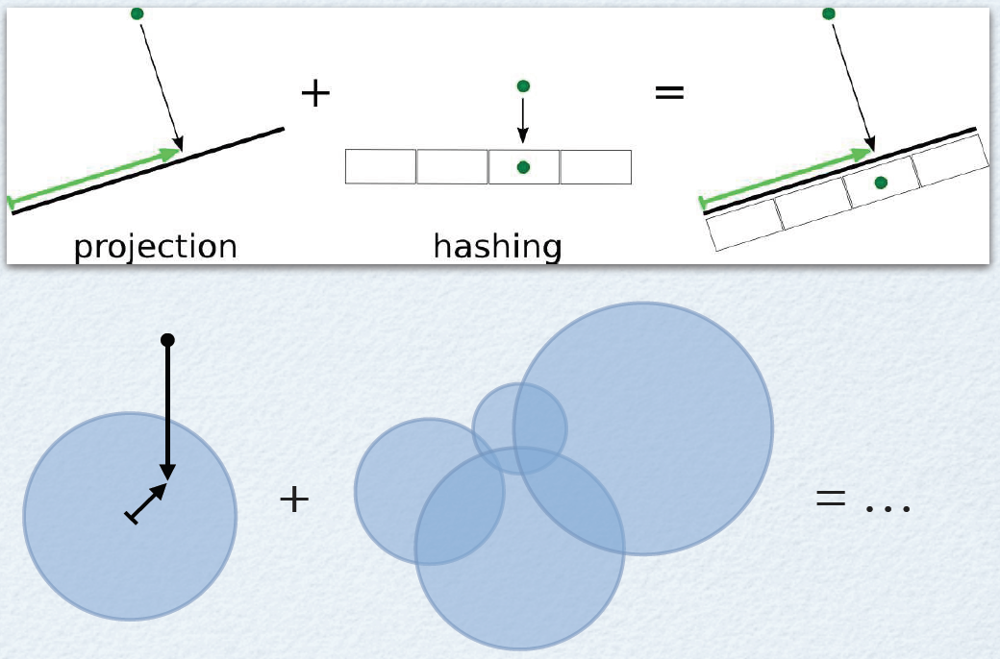

Week 6: Memory II
Lecture 6.2: associative memory and hashing

computational aspects of information retrieval

-
Managing a large store of information presents a real
computational challenge.
-
A real-world behavioral task that illustrates this challenge:
associative lookup (as in "this reminds me of...").
-
An interlude:
-
Computational principles of memory.
-
A geometric model of memory for sequences of events.
-
An algorithm-level approach to associative lookup: hashing.
- locality-sensitive hashing (LSH)
- An algorithm-level solution: random projection followed by
"pigeonholing".
-
"projection" onto a set of landmarks (what I called the
Chorus Transform [marked as "extra" material] in last
week's Lecture 5.1)
memory lookup as falling into an attractor
|
Memory storage: creating attractors.
|
Memory recall: falling into an attractor.
|
|
|
|
associative lookup as falling into an attractor
|
ASSOCIATIVE recall: falling into an attractor from a nearby
location.
But how to get to the right neighborhood in the first place?
|
|
|
|
vagaries of autoassociative recall
ASSOCIATIVE recall: falling into an attractor from a nearby
location.
But how to get to the right neighborhood in the first place? And
what to do if more than one item is retrieved?
[implementation-level theory] principles of memory (Chaudhuri & Fiete, 2016)
-
In discrete attractor networks, states in the neighborhoods of
attractors decay to their attractors and are thus
automatically corrected (memory retrieval from partial cues).
-
Top, limits on noise correction. Bottom, sensitivity to
structural noise.
-
When coding with long transients in a non-persistent system,
the initial separation between states decays over time
(converging blue traces). Thus, the ability of a given noise
strength to confuse two states grows with time.
-
Complex trajectories in
balanced networks can be surrounded by
a small region that pulls states back onto the
trajectory. However these regions seem to be vanishingly small
with system size.
Rishidev Chaudhuri and Ila Fiete
(2016). Computational principles of memory, Nature
Neuroscience 19(3):394.
trajectories through topic space: dynamics of the episode and recalls (Heusser et al., 2021)
-
The two-dimensional
topic [space] trajectory taken by the episode
of Sherlock. Each dot indicates an event [identified
using the
HMM]. Dot colours denote the order of
the events (early events are in red, later events are in
blue), and the connecting lines indicate the transitions
between successive events.
-
The average two-dimensional trajectory captured by
participants’ recall sequences, with the same format and
colouring. Arrows reflect the average transition direction
through topic space taken by any participants whose
trajectories crossed that part of topic space; blue denotes
reliable agreement across participants
Andrew Heusser et
al. (2021). Geometric models reveal behavioural
and neural signatures of transforming experiences
into memories, Nature Human Behavior
5:909.
language used in most and least precisely remembered events (Heusser et al., 2021)
The set of all episode and recall events is projected onto the
two-dimensional space derived in the previous figure. The dots
outlined in black denote episode events (dot size is
proportional to each event’s average precision). The dots
without black outlines denote individual recall events from each
participant.
Andrew Heusser et
al. (2021). Geometric models reveal behavioural
and neural signatures of transforming experiences
into memories, Nature Human Behavior
5:909.
[back to implementation-level theory] capacity / robustness trade-off (Chaudhuri & Fiete, 2016)
-
If memory states, whether discrete or continuous (dark blue in
left, right, respectively), are well-separated, a decoder can
robustly recover the state from a relatively large amount of
noise because the neighborhoods of each memory state are large
(shaded light blue regions).
-
Packing more memory states into the fixed state space volume
of a given number of neurons necessarily means that the
neighborhoods of each memory state will shrink. A small amount
of noise drops the state into the neighborhood of a different
memory state. Thus, higher capacity means less noise
tolerance.
Rishidev Chaudhuri and Ila Fiete
(2016). Computational principles of memory, Nature
Neuroscience 19(3):394.
storing a continuous variable with discrete attractors (Chaudhuri & Fiete, 2016)

-
Values of a continuous variable (such as head orientation) can
be naturally mapped onto a (quasi)continuous attractor of the
same dimension and topology, preserving metric relationships
between different values of the variable.
-
To encode a continuous variable in a set of well-separated
discrete stable states in some other coding dimension involves
two steps: a discretization, followed by THE HARDER STEP of
choosing how to map the discrete values into the
attractors. In general, there is no metric-preserving mapping
and the complexity of this encoding problem is high.
Rishidev Chaudhuri and Ila Fiete
(2016). Computational principles of memory, Nature
Neuroscience 19(3):394.
[computation and algorithm levels] ASSOCIATIVE MEMORY: balancing task requirements
[THE HARDER STEP from the previous slide]
How to get to the right neighborhood in the first place?
And what to do if more than one item is retrieved?
Answers to those questions will NOT be found on the implementation
level (attractors dynamics) — we must consider the more abstract
levels (behavioral / computational / algorithmic).
Let's start with the TASK. For any task that involves
storage/retrieval, the needs are:
- high capacity (room for many items)
- convenient addressing (easy to figure out at what address a given
item is stored)
- quick access (not having to sift through too many items to find the
needed one)
a historical example: Pandemonium
The requirements: a storage/retrieval mechanism with
- high capacity (room for many items)
- convenient addressing (easy to figure out at what address a given
item is stored)
- quick access (not having to sift through too many items to find the
needed one)
One way of going about it: Selfridge's
Pandemonium model (1959). The illustration here
is from
Human Information Processing (Lindsay & Norman, 1972)
A better, general-purpose algorithmic approach: HASHING.
associative memory and hashing

Hashing is a family of storage/retrieval algorithms that use
a hash function to MAP CONTENT TO AN ADDRESS.
[See
this recent article on hashing in the Quanta
magazine.]
Hashing supports one-step (constant-time) access. But there are
also downsides.
Using hashing to implement associative memory leads to tension between
two conflicting requirements:
-
on the one hand, we need fast recall with low probability of
error ("collision", red arrows on the right);
-
on the other hand, we need to preserve the similarity
structure of the data (map similar items to nearby
addresses).
A way out through compromise: locality-sensitive hashing
(think of the
Dewey Decimal library indexing) —

an illustration of locality-sensitive hashing (Kulis et al., IEEE TPAMI 2009)
Locality-sensitive hashing (LSH) combines one-step associative
recall with partial preservation of the local similarity
structure of the data.
Training (top left of the diagram): A list of \(k\) hash functions
\(h_{r_1},\ldots,h_{r_k}\) (here, \(k=6\) for a six-bit address) is
applied to pigeonhole the \(N\) items that need to be stored into the
cells of a hash table, so that similar items (here,
similar-color) are likely to share a cell.
Use (bottom left): To obtain the approximate near-neighbors for a query
\(Q\), one need only hash it and then evaluate its similarity to the
set of examples with which it "collides" (as opposed to the contents of the entire
database, as in the Pandemonium).
Outcome (bottom right): The 3 out of 4 items in bin 110111 whose
relevant characteristic (here, color) matches that of \(Q\).
hashing: post-processing after recall
|
|
|
Post-processing (further filtering) will typically be
required, but its complexity [number of elementary
operations needed to complete] is low, because most irrelevant
items have already been filtered out when the hash table was
populated with data.
|
|
|
what kind of hashing function is needed for locality-sensitive hashing (LSH)?

ANY hashing function \(h\) that maps the data space to the memory
address space is suitable for LSH, provided that the LSH condition is
satisfied (Indyk & Motwani, 1998):
-
If two data points \({\bf p},{\bf q}\) are close to each other, the
probability of mapping them to the same bin (memory cell) must be
relatively large (below, larger than some \(P_1\)).
-
If the two data points are not so close to each other, the probability
of mapping them to the same bin must be relatively small (below,
smaller than some small \(P_2\)).
$$
\begin{alignat}{2}
\textrm{if}~\|{\bf p} - {\bf q}\| \leq
&~r~~~~&\textrm{then}~~~&~\textrm{P}\left[h({\bf p})=h({\bf q})\right]
\geq P_1 \phantom{\ll P_1} ~~~(P_1~is~a~large~probability)\\
\textrm{if}~\|{\bf p} - {\bf q}\| \geq
&~cr~~~~&\textrm{then}~~~&~\textrm{P}\left[h({\bf p})=h({\bf q})\right]
\leq P_2 \ll P_1 ~~~(P_2~is~a~small~probability)
\end{alignat}
$$
locality-sensitive hashing (LSH) and the so-called "Chorus Transform" (Edelman & Shahbazi, 2012)

One of the LSH families described by Andoni and Indyk (2008) is
"multidimensional line partitioning":
- perform a random projection of the data point
\(\bf{p}\) onto a space that consists of a few lines — that
is, \(\mathbb{R}^t\), where \(t\) grows slowly with \(n\), as for
instance in \(t \sim \log n\);
-
partition the space \(\mathbb{R}^t\) into cells;
-
make the hash function return the index of the cell that contains the
projected point \(\bf{p}\).
This is precisely what happens when the location of the data
point relative to several LANDMARKS is computed, as illustrated
here (see also the next slide for a reminder from
Lecture 5.1). A point projected onto the
gray plane activates four units TUNED to landmark
locations; the relative activation of each unit is depicted
by the size of the corresponding blue circle. The resulting
list of four numbers is the output of the hash function:
the memory address associated with the data point.
recall from Lecture 5.1: using distances to landmarks
An object can be effectively represented by the responses of
several units that are broadly TUNED to LANDMARK shapes.
A set of such tuned units are said to compute a Chorus Transform of the
stimulus \(\textbf{x}\)
(here, giraffe), defined as the
vector of distances (inverse similarities) between \(\textbf{x}\) and the landmarks
\(\textbf{p}_i\)
(here, pig,
camel,
goat):
$$
CT({\bf x}) = \left( \begin{array}{c}
\| {\bf x} - {\bf p}_1 \| \\ \vdots \\ \| {\bf x} - {\bf p}_{n} \|
\end{array} \right)
$$
The application of the
norm function \(\|\cdot\|\) to each
difference vector \({\bf x} - {\bf p}_i\) yields its length and
therefore the distance between \({\bf x}\) and \({\bf p}_i\).
CT maps points from the original space with \(dim(\textbf{x}) = D\)
dimensions to a space spanned by distances to
landmarks, which has \(n \ll D\) dimensions (\(n\) being the number of
landmarks). In a typical situation in vision, this is some
SERIOUS dimensionality reduction.
reminder: why projection (as in LSH and in CT) can preserve veridicality

According to the Johnson-Lindenstrauss Lemma (1984), a cloud of points in a
high-dimensional space can be projected onto a space of a VERY much lower
(logarithmically lower) dimensionality, while largely preserving the
relative distances among
points.*
Relying on a related idea, Edelman (1999, App.B) showed that the
Chorus Transform can support a logarithmic dimensionality
reduction, while approximately preserving the relative distances
among points (based on a theorem due
to Jean Bourgain, 1985).
In other words, even with a very small number of landmarks — on
the order of \(\log D\), where \(D\) is the dimensionality of the
original problem — the layout of the data points in the new,
low-dimensional space approximates their original layout, implying
that the original similarity relations, and with them
category boundaries, etc., are largely preserved.
*Specifically, any \(n\)-point subset of Euclidean space can be
embedded in \(O(\epsilon^{−2} \log n)\) dimensions with at most \((1 +
\epsilon)\) distortion of the inter-point distances.
[BACK TO LSH] compare locality-sensitive hashing (LSH) and the CT (Edelman & Shahbazi, 2012)
One of the LSH families described by Andoni and Indyk (2008) is
"multidimensional line partitioning":
- perform a random projection of the data point
\(\bf{p}\) onto a space that consists of a few lines — that
is, \(\mathbb{R}^t\), where \(t\) grows slowly with \(n\), as in
\(t \sim \log n\);
-
partition the space \(\mathbb{R}^t\) into cells;
-
make the hash function return the index of the cell that contains the
projected point \(\bf{p}\).
This is precisely what the Chorus Transform does:
- Project \(\bf{p}\) onto the space
(manifold)
defined implicitly by the choice of landmarks/prototypes;
- Use the receptive field of each tuned prototype unit
as a "feature detector" to compute part of the address
of the "pigeonhole" where the item will be stored.
[EXTRA] CT and locality-sensitive hashing (Edelman & Shahbazi, 2012)
To form a "digital" address,
the outputs of the tuned units can be thresholded, in which
case the address consists of the list of indices of units
whose activation by the probe point exceeds the threshold.
Without thresholding, the Chorus Transform can be seen to carry out
kernelized LSH (Kulis and Grauman, 2009). For instance, we may define
the space \(V_j\) onto which the data are projected by the \(j\)-th hashing function
as a linear combination of "landmarks" \(\left\{{\bf{z}}_n\right\}\) in the
kernel space. This idea leads to the hash function
$$
\begin{eqnarray}
h({\bf p}) = sign\left({\bf a}^{T} {\bf k}_{{\bf p}} - {\bf
b}\right)
\end{eqnarray}
$$
where \(\bf{a}\) are the linear combination weights and
$$
\begin{eqnarray}
{\bf k}_{\bf x}= \left[K\left({\bf x}, {\bf z}_{1}\right), \ldots,
K\left({\bf x}, {{\bf z}}_{n}\right)\right]^{T}
\end{eqnarray}
$$
are the kernel values between \(\bf{x}\) and each of the landmark points
\({\bf{z}}_n\). With the distance function \(\|\cdot\|\) serving as the
kernel and \({\bf{z}}_n\) as the prototypes, this is precisely the Chorus
Transform of the data point \(\bf{x}\).
[CLIMATE] disaster memory and economic valuation
"The purchase and sale of assets such as housing will increasingly
be affected by forces related to a changing climate. This
article considers decisions over assets as a neurobiological
process in which an associative memory with pattern
completion informs choices. We develop these neuroeconomic
explanations and analyze their implications for climate
change-related shocks in asset markets, and discuss these effects
in the context of both individual experiences as well as
community-driven remembering. These neuroeconomic models provide
mechanistic explanations for behavioral responses to more easily
accessed information (the “representativeness” and “availability”
heuristics, “framing” and “priming”). Understanding the links from
neuroscience to economics is critical to building policies and
institutions capable of coping with and adjusting to disasters
affecting real assets that are increasing in frequency and scope
due to climate change."
Runge, C. F., Johnson, J. A., Nelson, E., & Redish,
A. D. (2023). A neuroscience-based analysis of impacts of
disaster memory on economic valuation. Journal of
Neuroscience, Psychology, and Economics, 16(1),
24–49. https://doi.org/10.1037/
[CLIMATE] disaster memory and economic valuation

Top: The single-agent concept. We do not specifically
model the world, the perceptual signals, nor the action in this
model, but concentrate on the memory and valuation components.
Bottom: Memory consists of a set of fully interconnected
units forming a content-addressable memory that projects to a
single valuation calculation.
Runge, C. F., Johnson, J. A., Nelson, E., & Redish,
A. D. (2023). A neuroscience-based analysis of impacts of
disaster memory on economic valuation. Journal of
Neuroscience, Psychology, and Economics, 16(1),
24–49. https://doi.org/10.1037/
[CLIMATE] disaster memory and economic valuation
We find that our simple model can explain the following observed
effects in flood-related evaluation of housing values:
-
Experience with floods produces a decrease in asset valuation
(i.e., an increase in assessed costs). These assessed costs
decay with time, returning to zero through cognitive drift.
-
Decay rates depend on the salience of the flood, while
assessed cost depends on the cost of the flood.
-
Reminders can reduce that rate of decay.
-
Reassessments of the cost of a flood increase the expected
cost, while alleviations can provide sudden decreases in
expected cost. However, neither of those changes in valuation
affect the decay rate.
Runge, C. F., Johnson, J. A., Nelson, E., & Redish,
A. D. (2023). A neuroscience-based analysis of impacts of
disaster memory on economic valuation. Journal of
Neuroscience, Psychology, and Economics, 16(1),
24–49. https://doi.org/10.1037/